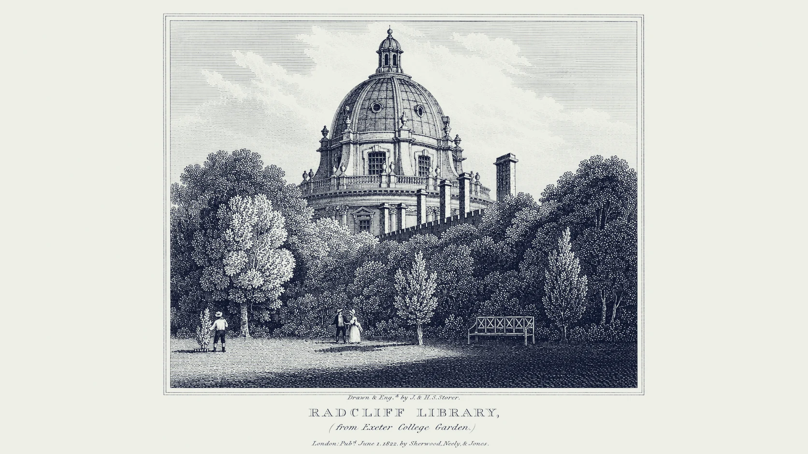

Every paper now reads like
every other paper.
The use of AI will quietly do what is already happening: shaving off the unique parts of every writer. It gives every student a perfect score in grammar, at the cost of lifeless prose.
The variance that once distinguished a freshman from a finalist (the loose comma, the unjustified but, the sentence that forgets its own beginning) has been quietly ironed out.
Plagiarism detectors ask the wrong question: they ask what wrote this, human or computer. The inevitable question, the more difficult question, is: did this student write this paper?
Original turns verified, proctored writing into a verified baseline, so when a take-home paper is questioned, it will show whether it is the same writer, and why.
We walk into the ruin of writing not through copying someone else, but through a lack of true inspiration, a conformance to nothing but the next AI suggestion. Over time it is no longer your writing: not something you could have written, but what everyone has written.
Death is not detected by a grammar check, because grammar is the one area to survive. It is rather their hand, their style, fading into nothingness; not just one, but all future generations giving papers that no one can tell apart.
Every writer leaves a fingerprint.
Style doesn't live as decoration, but as the structural, underlying habits of the writer: the cadence, the semicolon instead of the em dash, the habitual style people reach for, growing inside them since they first composed a sentence.
As these habits are stable across time, and dense across paragraphs, they become measurable to a thousandth of a unit across a hundred different markers.
Original reconciles them all to find your fingerprint.
Seven families of quiet evidence.
Each submission is parsed into 109 stylometric features across eighteen tiers, from the surface (sentence length, vocabulary range) to the idiosyncratic (the exact rhythm at which you place a dash). Ninety-seven are active today; the twelve keystroke and uniformity features stay off until they pass validation.
A fingerprint is only as honest
as the hand that gave it.
Every comparison Original makes rests on one question: what does this student's writing actually look like? The answer can never come from take-home work; it must come from writing no one could have done for them.
So the baseline is built only from proctored writing: in-class exams sat in Bluebook, a locked exam window the professor opens and a proctor supervises. Each sealed exam becomes an authenticated sample: timed, dated, and marked as proctored.
About five sealed exams in, the profile is ready to compare against, and Original tells the professor while a baseline is still thin. Zero student setup: they just write, the way they always have.
What a real writer
cannot help building.
Beneath the surface features, Original measures a deeper signal borrowed from catastrophe theory: the tension arc, κ = σ(ρ) · (1 − μ(ρ)). It is the structural unresolved tension that runs across a real argument: the writer's instinct to not yet say it, to build, defer, dwell, and only then resolve. AI text, even when fluent, tends to flatten the arc.
Three papers.
One voice.
Original is not a detector of difference from a norm. It is a detector of difference from yourself.
The instructor authenticates five or more writing samples in-class, by hand, or under supervision. From these, Original constructs the student's baseline fingerprint, a quantum density matrix ρ spanning every tier.
Every later submission is measured against that baseline. The math is fair: each student is compared only to themselves. ESL students, neurodivergent writers, and idiosyncratic stylists are not penalised for being unusual, only for being suddenly someone else.
The whole term on one page.
Every flag with its evidence.
This is what a professor opens on a Monday morning: the term at a glance, the few papers that read differently from their writers' usual habits, and a plain-English account of what moved. Choose stats on any row to see one student's evidence, tier by tier.
Try Original
on your own writing.
Paste any passage: twenty words is enough, two hundred is better. Your browser measures a handful of surface habits in real time and draws a provisional fingerprint; nothing is sent anywhere. (The full instrument, 109 features compared against a proctored baseline, runs on the server.)